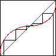
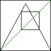
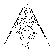
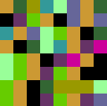
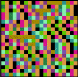

| Some dynamical behaviors can be predicted. Here are
two examples. |
| Fixed points are points x* left
unchanged by the dynamics: f(x*) = x* for sequences generated by
iterating a function f(x). For graphical iteration, fixed points are seen as the intersections
of y = f(x) and y = x. The time series of a fixed point is a horizontal line. Fixed points
are stable or unstable according
as nearby points approach or recede from the fixed point. |
 |
| An N-cycle is a collection of points x1,
x2, ..., xN, that occur sequentially, with xN followed by
x1 and the pattern repeating. For sequences generated by iterating a function
f(x), the cycle is determined by x2 = f(x1), x3 =
f(x2), ..., x1 = f(xN). These cycles are intersections of
y = x and y = fN(x) = f(f(...f(x)...)). Stability of a cycle is analogous to
that of a fixed point. |
 |
|
| Here are three more ways to analyze chaotic data. |
| The return map is a plot of points
(x0,x1), (x1,x2),
(x2,x3), (x3,x4),
... . For orbits of functions xi+1 = f(xi), the return map
just produces points on the graph y = f(x). So for experimental data, the return
map shows how well the data can be represented by one-dimensional dynamics. |
 |
| For the driven IFS plot, the range
[orbit min, orbit max] is divided into four bins and the corners of the
unit square are numbered 1 through 4. Starting from (1/2,1/2),
the plot consists of points p0, p1, ... , where pi+1
is the midpoint of pi and the corner numbered for the bin in which
pi falls. |
 |
| For a Kelly plot, the range
[orbit min, orbit max] is divided into some number, N, of bins and a
color is assigned to each bin. Then small squares are colored sequentially, the
color of each square is that of the bin into which the corresponding orbit point
falls. With some practice, this method can give a good visual test for uniform and
Gaussian randomness, for intermittency, and other dynamics. |
 |
|
| Finally, we apply two of these techniques to the tent map and the logistic map. |
| IFS driven by the Tent Map and the
Logistic Map reveal a new measure of complexity. In some instances, the pattern is identical to
that produced by a random IFS with certain pairs of transformations excluded. Others require longer
excluded combinations (triples, quadruples, etc.) The number of excluded combinations is this measure
of complexity. Applied to real data, this suggests how many steps in the past are needed to determine the
future. |
 |
| Kelly plots of the Tent Map and the
Logistic Map produce some interesting patterns, but is it art? Intermittency if clearly seen by
this method (as in the picture on the right), and excluded combinations can be detected, though with
more work than driven IFS. On the other hand, some long-range correlations can be more readily seen.
Also, this method has more flexibility in the number of bins assigned to the data. Driven IFS and
Kelly plots complement one another nicely. |
 |
|